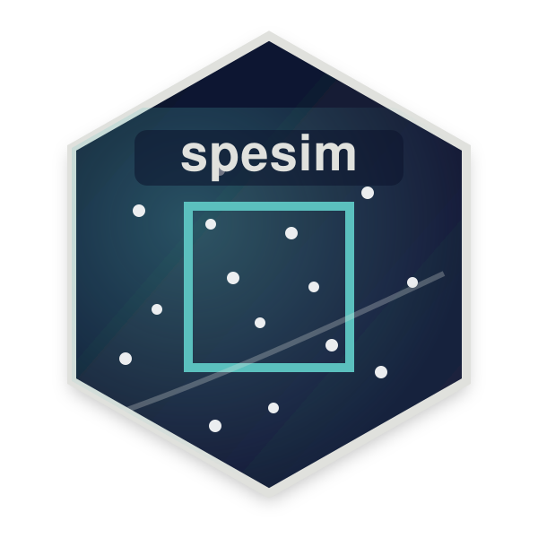
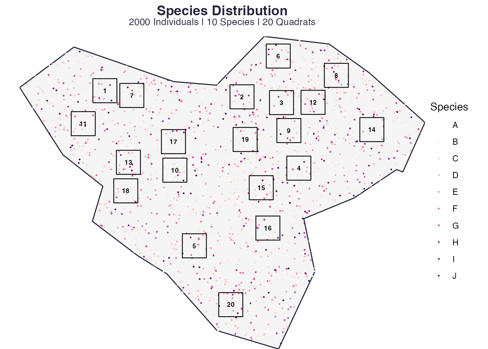

spesim recipes: interspecific interactions
Source:vignettes/spesim-recipes-interactions.Rmd
spesim-recipes-interactions.RmdThis recipe shows how to specify simple neighbour
effects using INTERACTIONS_EDGELIST.
Values:
-
< 1suppressive (competition) -
> 1facilitative -
= 1neutral
Baseline (no interactions)
library(spesim)
#> spesim loaded - try run_spatial_simulation() to generate a simulation.
P <- load_config(system.file("examples/spesim_init_basic.txt", package = "spesim"))
#> ========== INITIALISING SPATIAL SAMPLING SIMULATION ==========
P$N_SPECIES <- 10
P$N_INDIVIDUALS <- 2000
P$ADVANCED_ANALYSIS <- FALSE
# Turn interactions off
P$INTERACTION_RADIUS <- 0
P$INTERACTIONS_EDGELIST <- NULL
res0 <- run_spatial_simulation(P = P, write_outputs = FALSE, interactions_print = FALSE)
#> Note: no non-1 interactions for species: A, B, C, D, E, F, G, H, I, J.
#> ========== INITIALISING SPATIAL SAMPLING SIMULATION ==========
#> ========== SIMULATION PARAMETERS ==========
#> list(SEED = 77L, OUTPUT_PREFIX = "out/run_basic", N_INDIVIDUALS = 2000,
#> N_SPECIES = 10, DOMINANT_FRACTION = 0.3, FISHER_ALPHA = 4.2,
#> FISHER_X = 0.95, GRADIENT_SPECIES = c("A", "B", "C", "D"),
#> GRADIENT_ASSIGNMENTS = c("temperature", "temperature", "elevation",
#> "rainfall"), GRADIENT_OPTIMA = 0.5, GRADIENT_TOLERANCE = 0.12,
#> SAMPLING_RESOLUTION = 50L, ENVIRONMENTAL_NOISE = 0.05, MAX_CLUSTERS_DOMINANT = 5,
#> CLUSTER_SPREAD_DOMINANT = 3, INTERACTION_RADIUS = 0, INTERACTION_MATRIX = structure(c(1,
#> 1, 1, 1, 1, 1, 1, 1, 1, 1, 1, 1, 1, 1, 1, 1, 1, 1, 1, 1,
#> 1, 1, 1, 1, 1, 1, 1, 1, 1, 1, 1, 1, 1, 1, 1, 1, 1, 1, 1,
#> 1, 1, 1, 1, 1, 1, 1, 1, 1, 1, 1, 1, 1, 1, 1, 1, 1, 1, 1,
#> 1, 1, 1, 1, 1, 1, 1, 1, 1, 1, 1, 1, 1, 1, 1, 1, 1, 1, 1,
#> 1, 1, 1, 1, 1, 1, 1, 1, 1, 1, 1, 1, 1, 1, 1, 1, 1, 1, 1,
#> 1, 1, 1, 1), dim = c(10L, 10L), dimnames = list(c("A", "B",
#> "C", "D", "E", "F", "G", "H", "I", "J"), c("A", "B", "C",
#> "D", "E", "F", "G", "H", "I", "J"))), INTERACTIONS_FILE = NULL,
#> SAMPLING_SCHEME = "random", N_QUADRATS = 20L, QUADRAT_SIZE_OPTION = "medium",
#> N_TRANSECTS = 1, N_QUADRATS_PER_TRANSECT = 8, TRANSECT_ANGLE = 90,
#> VORONOI_SEED_FACTOR = 10, POINT_SIZE = 0.2, POINT_ALPHA = 1,
#> QUADRAT_ALPHA = 0.05, BACKGROUND_COLOUR = "white", FOREGROUND_COLOUR = "#22223b",
#> QUADRAT_COLOUR = "black", ADVANCED_ANALYSIS = FALSE, SPATIAL_PROCESS_A = "poisson",
#> A_PARENT_INTENSITY = NA_real_, A_MEAN_OFFSPRING = 10, A_CLUSTER_SCALE = 1,
#> SPATIAL_PROCESS_OTHERS = "poisson", OTHERS_BETA = NA_real_,
#> OTHERS_GAMMA = NA_real_, OTHERS_R = 1, OTHERS_S = 2, GRADIENT = structure(list(
#> species = c("A", "B", "C", "D"), gradient = c("temperature",
#> "temperature", "elevation", "rainfall"), optimum = c(0.5,
#> 0.5, 0.5, 0.5), tol = c(0.12, 0.12, 0.12, 0.12)), class = c("tbl_df",
#> "tbl", "data.frame"), row.names = c(NA, -4L)))
#>
#> ========== RUNNING SIMULATION ==========
#> Warning: attribute variables are assumed to be spatially constant throughout
#> all geometries
plot_spatial_sampling(res0$domain, res0$species_dist, res0$quadrats, res0$P)
Add a few directed interaction rules
Here, species A suppresses B..D locally, and species C facilitates A.
P2 <- P
P2$INTERACTION_RADIUS <- 2
P2$INTERACTIONS_EDGELIST <- c(
"A,B-D,0.7",
"C,A,1.3"
)
res1 <- run_spatial_simulation(P = P2, write_outputs = FALSE, interactions_print = TRUE)
#> Note: no non-1 interactions for species: E, F, G, H, I, J.
#> ---- Interactions Summary ----
#> Species: 10 (A..J)
#> Radius : 2
#> Non-1 entries: 4 (4.0% of 100)
#> Asymmetry (mean |M - t(M)|): 0.024
#>
#> Matrix ('.' = 1):
#> A B C D E F G H I J
#> A . 0.7 0.7 0.7 . . . . . .
#> B . . . . . . . . . .
#> C 1.3 . . . . . . . . .
#> D . . . . . . . . . .
#> E . . . . . . . . . .
#> F . . . . . . . . . .
#> G . . . . . . . . . .
#> H . . . . . . . . . .
#> I . . . . . . . . . .
#> J . . . . . . . . . .
#>
#> Non-1 entries (sorted by |value-1|):
#> focal neighbor value
#> A B 0.7
#> A C 0.7
#> A D 0.7
#> C A 1.3
#> ------------------------------
#> ========== INITIALISING SPATIAL SAMPLING SIMULATION ==========
#> ========== SIMULATION PARAMETERS ==========
#> list(SEED = 77L, OUTPUT_PREFIX = "out/run_basic", N_INDIVIDUALS = 2000,
#> N_SPECIES = 10, DOMINANT_FRACTION = 0.3, FISHER_ALPHA = 4.2,
#> FISHER_X = 0.95, GRADIENT_SPECIES = c("A", "B", "C", "D"),
#> GRADIENT_ASSIGNMENTS = c("temperature", "temperature", "elevation",
#> "rainfall"), GRADIENT_OPTIMA = 0.5, GRADIENT_TOLERANCE = 0.12,
#> SAMPLING_RESOLUTION = 50L, ENVIRONMENTAL_NOISE = 0.05, MAX_CLUSTERS_DOMINANT = 5,
#> CLUSTER_SPREAD_DOMINANT = 3, INTERACTION_RADIUS = 2, INTERACTION_MATRIX = structure(c(1,
#> 1, 1.3, 1, 1, 1, 1, 1, 1, 1, 0.7, 1, 1, 1, 1, 1, 1, 1, 1,
#> 1, 0.7, 1, 1, 1, 1, 1, 1, 1, 1, 1, 0.7, 1, 1, 1, 1, 1, 1,
#> 1, 1, 1, 1, 1, 1, 1, 1, 1, 1, 1, 1, 1, 1, 1, 1, 1, 1, 1,
#> 1, 1, 1, 1, 1, 1, 1, 1, 1, 1, 1, 1, 1, 1, 1, 1, 1, 1, 1,
#> 1, 1, 1, 1, 1, 1, 1, 1, 1, 1, 1, 1, 1, 1, 1, 1, 1, 1, 1,
#> 1, 1, 1, 1, 1, 1), dim = c(10L, 10L), dimnames = list(c("A",
#> "B", "C", "D", "E", "F", "G", "H", "I", "J"), c("A", "B",
#> "C", "D", "E", "F", "G", "H", "I", "J"))), INTERACTIONS_FILE = NULL,
#> SAMPLING_SCHEME = "random", N_QUADRATS = 20L, QUADRAT_SIZE_OPTION = "medium",
#> N_TRANSECTS = 1, N_QUADRATS_PER_TRANSECT = 8, TRANSECT_ANGLE = 90,
#> VORONOI_SEED_FACTOR = 10, POINT_SIZE = 0.2, POINT_ALPHA = 1,
#> QUADRAT_ALPHA = 0.05, BACKGROUND_COLOUR = "white", FOREGROUND_COLOUR = "#22223b",
#> QUADRAT_COLOUR = "black", ADVANCED_ANALYSIS = FALSE, SPATIAL_PROCESS_A = "poisson",
#> A_PARENT_INTENSITY = NA_real_, A_MEAN_OFFSPRING = 10, A_CLUSTER_SCALE = 1,
#> SPATIAL_PROCESS_OTHERS = "poisson", OTHERS_BETA = NA_real_,
#> OTHERS_GAMMA = NA_real_, OTHERS_R = 1, OTHERS_S = 2, GRADIENT = structure(list(
#> species = c("A", "B", "C", "D"), gradient = c("temperature",
#> "temperature", "elevation", "rainfall"), optimum = c(0.5,
#> 0.5, 0.5, 0.5), tol = c(0.12, 0.12, 0.12, 0.12)), class = c("tbl_df",
#> "tbl", "data.frame"), row.names = c(NA, -4L)), INTERACTIONS_EDGELIST = c("A,B-D,0.7",
#> "C,A,1.3"))
#>
#> ========== RUNNING SIMULATION ==========
#> Warning: attribute variables are assumed to be spatially constant throughout
#> all geometries
# Visualise the outcome
plot_spatial_sampling(res1$domain, res1$species_dist, res1$quadrats, res1$P)